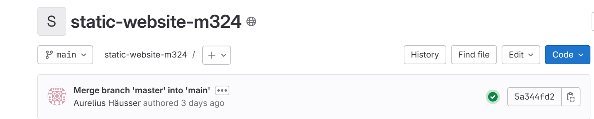
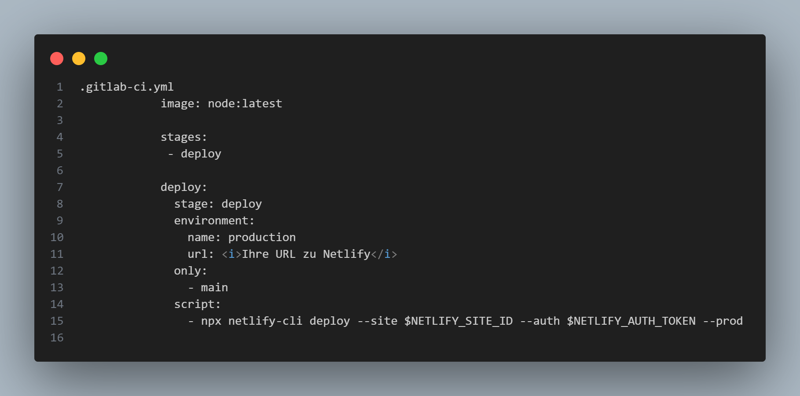
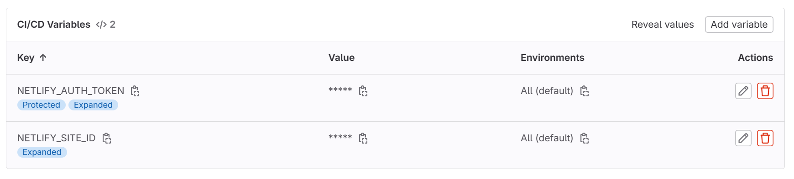

Netlify im DevOps Prozess
Was ist DevOps?
Netlify ist ein Cloud-Service, der Entwicklern ermöglicht,
Webanwendungen und statische Websites zu hosten, zu verwalten und zu
veröffentlichen. Es bietet eine einfache Möglichkeit, Webprojekte zu
veröffentlichen und zu skalieren, ohne sich um die Infrastruktur
kümmern zu müssen. Netlify unterstützt Continuous Deployment,
automatisierte Builds und bietet eine Vielzahl von Funktionen wie
Formulare, Authentifizierung und Serverless-Funktionen.
Einsatz von Netlify im DevOps Prozess
Netlify wird vor allem in den Phasen der Bereitstellung und Betrieb
eingesetzt. Es ermöglicht die schnelle und einfache Veröffentlichung
von Webanwendungen mit automatisierten Continuous Deployment-Verfahren
aus Git-Repositories.
Webseite auf Netlify einrichten und deployen mit GitLab
-
Melden Sie sich bei Netlify an
oder erstellen Sie ein neues Konto.
- Klicken Sie im Dashboard auf 'New site from Git'.
-
Wählen Sie Ihr Git-Repository aus, das Sie verwenden möchten. In
diesem Fall wählen Sie Ihr GitLab-Repository.
-
Stellen Sie die Build-Befehle und Veröffentlichungsoptionen gemäss
Ihrer Projektanforderungen ein:
-
Geben Sie den Build-Befehl an, z.B.
npm run build für
Node.js-Projekte.
-
Legen Sie das Verzeichnis fest, das die fertigen Dateien enthält,
z.B.
dist oder build.
-
Überprüfen Sie die Einstellungen und klicken Sie auf 'Deploy site'
um die Webseite zu veröffentlichen.
-
Um automatisches Deploy mit GitLab zu konfigurieren, müssen Sie
Webhooks verwenden. Gehen Sie dazu in Ihre Projekt-Einstellungen in
GitLab:
- Navigieren Sie zu 'Settings' > 'Webhooks'.
-
Fügen Sie die Build-Hook-URL von Netlify ein, die Sie unter den
Einstellungen Ihrer Site in Netlify finden.
-
Wählen Sie die Ereignisse aus, bei denen der Hook ausgelöst werden
soll, z.B. bei 'Push events'.
- Klicken Sie auf 'Add webhook'.
-
Netlify wird nun bei jedem Push in das verbundene GitLab-Repository
automatisch die neuesten Änderungen veröffentlichen. Anhand des
grünen Hakens, kann man erkennen, dass die Seite deployed wurde:

GitLab Pipeline für Netlify
-
Erstellen Sie in der Wurzel Ihres Repositories eine Datei namens
.gitlab-ci.yml.
-
Fügen Sie den folgenden Inhalt in die Datei ein, um die Pipeline zu
definieren:

-
Gehen sie in GitLab zu den Einstellungen und wählen Sie 'CI/CD' und
fügen Sie die Umgebungsvariablen
NETLIFY_SITE_ID und
NETLIFY_AUTH_TOKEN hinzu. Diese erhalten Sie beim
Einrichten des Netlify CLI.

-
Stellen Sie sicher, dass unter "General Pipelines" das filename
.gitlab-ci.yml ausgewählt ist.
Mit dieser Konfiguration wird bei jedem Push in den main
Branch die Webseite automatisch auf Netlify veröffentlicht.